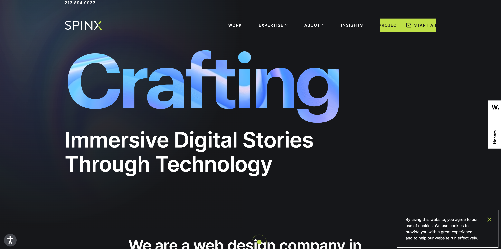

TRUE SITES
I Am A Developer
"Welcome to my website! I'm a web designer with a passion for
creating visually stunning and user-friendly websites. Explore my
portfolio and discover how I can help bring your online vision to life."
Here's Some of My Work


About Me
Contact Me